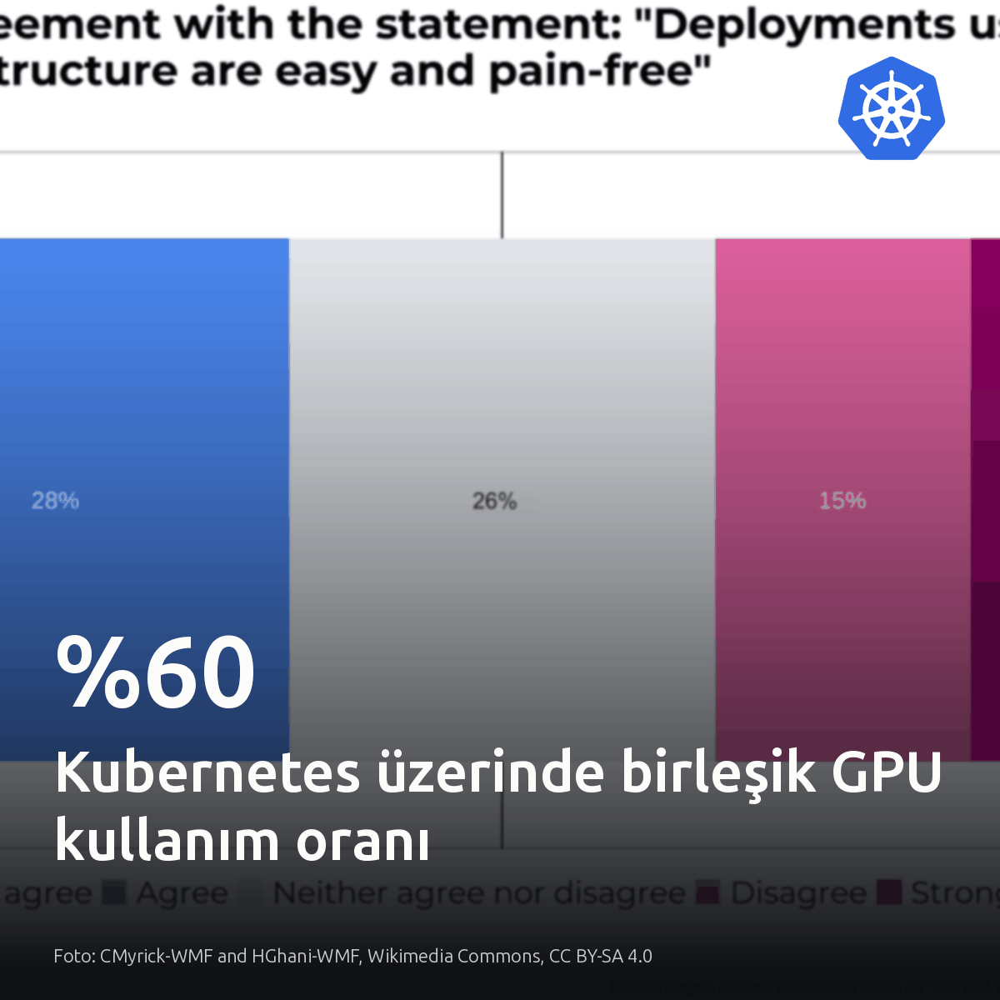
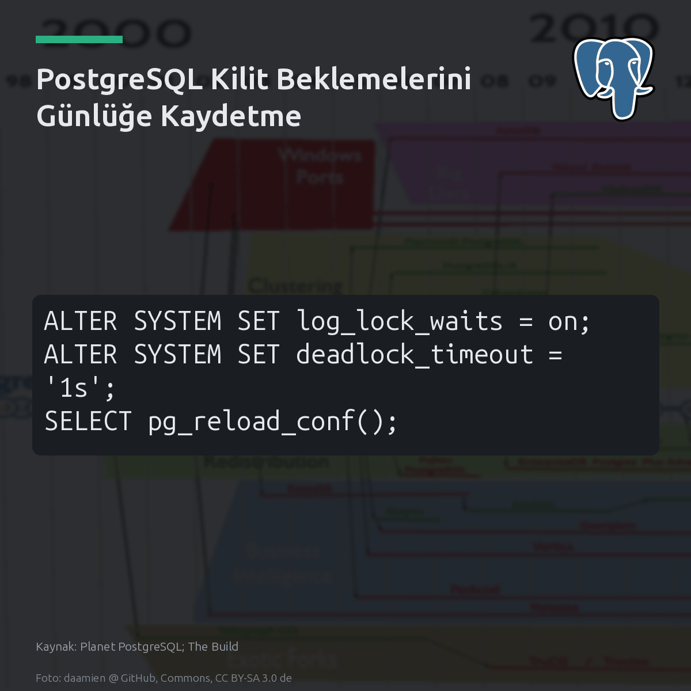
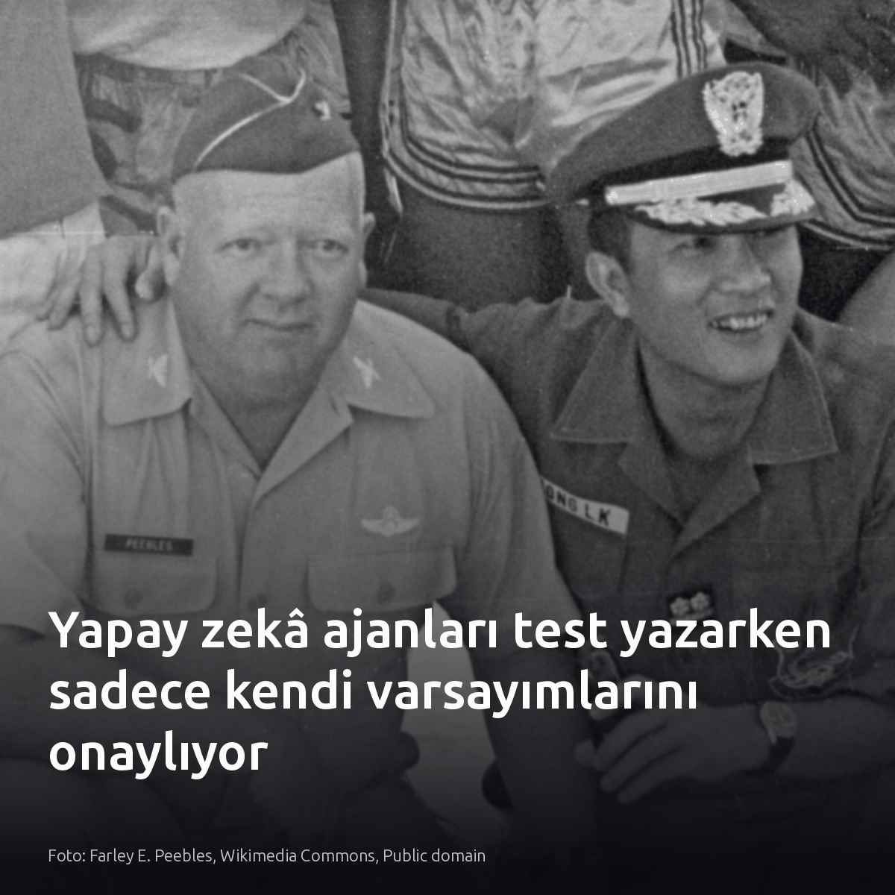
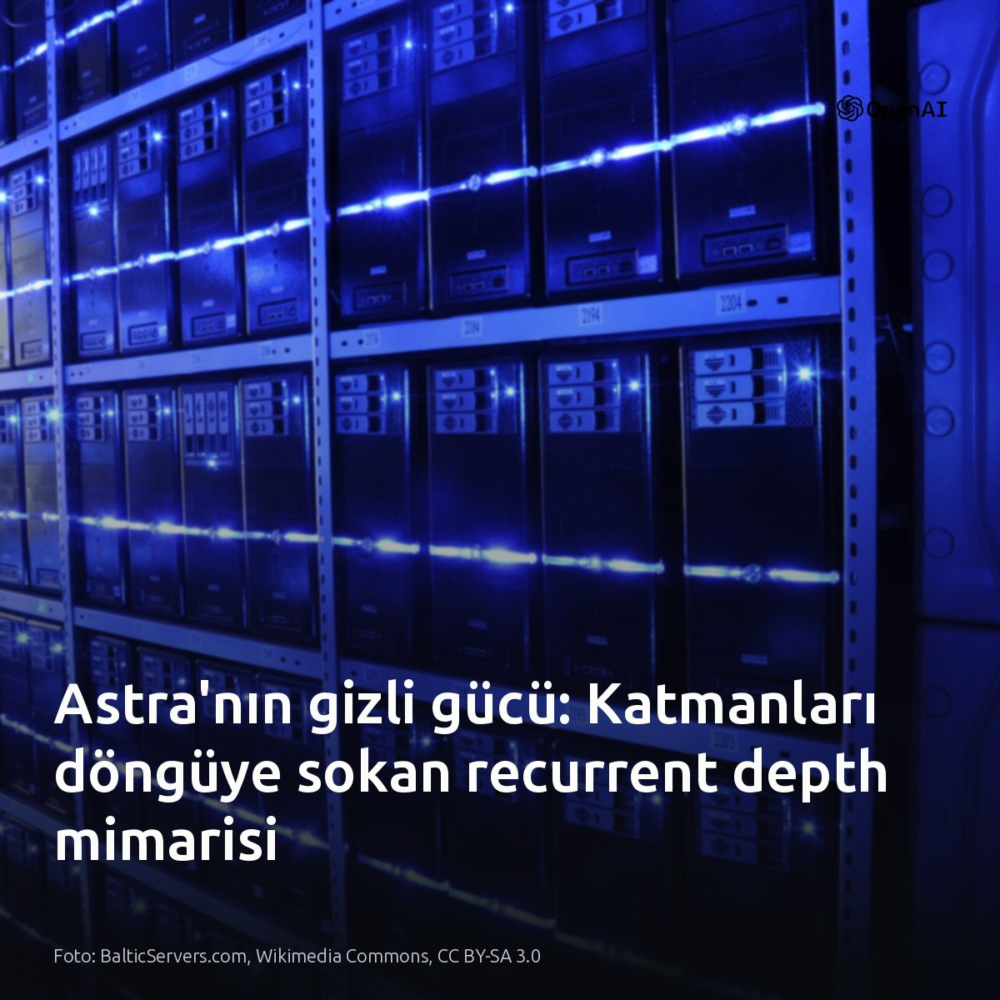
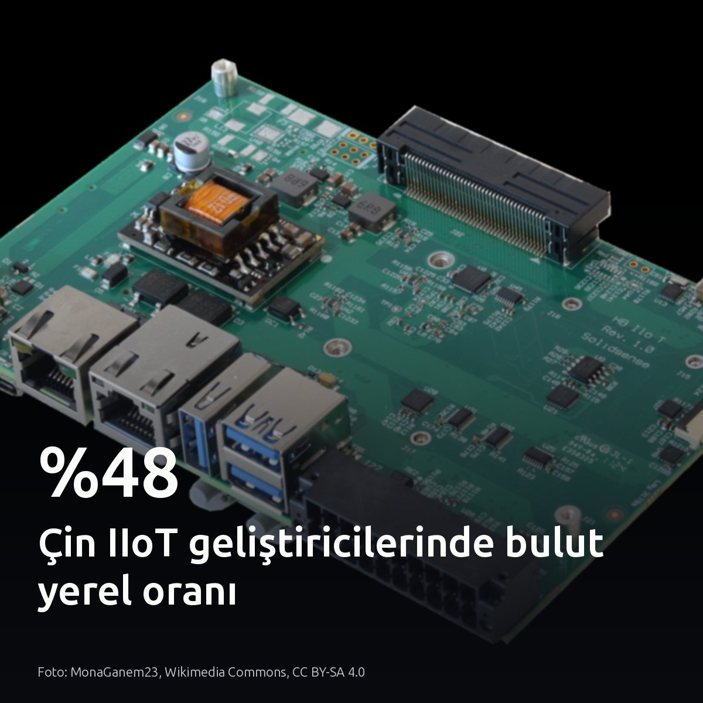

Metni kopyala, kartı indir, LinkedIn'de yapıştır. Bağlantılar gönderiye değil ilk yoruma.

Eğitim ve çıkarımı tek Kubernetes kümesinde birleştirmek, GPU kullanımını %35'ten %60'ın üzerine çıkardı. Ayrı silolarda donanım atıl kalıyordu. China Merchants Bank, yaklaşık 10.000 hızlandırıcı kartı dinamik öncelikle paylaştırarak token maliyetini de %60 düşürdü. Kapasite darboğazını yeni donanım değil, paylaşımlı küme mimarisi çözüyor. #kubernetes #gpu #cloudnativeKartı indir
Kaynaklar: CNCF vaka analizi: https://www.cncf.io/announcements/2026/09/07/china-merchants-bank-wins-cncf-end-user-case-study-contest-for-unifying-ai-training-and-inference-on-kubernetes/

PostgreSQL 18 dahil kilit beklemelerini yakalayan mekanizma varsayılan olarak kapalı geliyor. Bir satır kilidi yüzünden bağlantı havuzu dolup sorgu gecikmeleri tavan yaptığında sistem arkada hiçbir iz bırakmıyor. Günlükler tamamen sessiz kalıyor. PostgreSQL 19 bu ayarı açık getirecek, ancak mevcut kümelerde log_lock_waits değerini superuser yetkisiyle elle açmak gerekiyor. Yine de kilit beklemesi 1 saniyenin altında kalan mikro çekişmelerde bu parametre hiçbir uyarı üretmez. #postgresql #database #dbaKartı indir
Kaynaklar ve detaylı inceleme: - Görsel kaynağı: Planet PostgreSQL; The Build - Christophe Pettus, All Your GUCs in a Row: log_lock_waits and log_lock_failures: https://postgr.es/p/9tT

Ajanların kendi yazdığı testlerle hatalarını yakalayabildiği inancı testlerde çöktü. Karmaşık doğrulama istemleri belirgin bir üstünlük sağlamadı. Dan Luu'nun Rust tabanlı kıyaslamasında ek talimat almayan varsayılan kurulum ortalamanın üzerinde kalırken, ajanların sınır senaryoları denetlemek yerine kendi hatalı mantıklarını onaylayan döngüsel testler ürettiği görüldü. Sistem seviyesinde bağımsız deterministik denetimler kurulmadıkça, otonom kod teslimatında güvenilirlik sağlanamıyor. #softwaretesting #aiagents #softwareengineeringKartı indir
Kaynaklar ve inceleme: - Dan Luu, 'How well do agents use test/verification techniques?': https://danluu.com/agentic-testing/ - Görsel kaynağı: Farley E. Peebles, Wikimedia Commons, Public domain

Astra'nın akıl yürütme başarısı parametre sayısından değil, yinelenen katman derinliğinden geliyor. Standart transformer mimarisinde her katman girdiyi tek forward pass ile işleyip devrederken, recurrent depth aynı ağırlık matrislerini dinamik bir döngüde art arda çalıştırıyor. Model, mantıksal problemin zorluğuna göre hesaplama bütçesini aynı katmanlar üzerinde yineleyerek artırıyor. Bellek ayak izi değişmiyor. Toplam parametre hacmini ve VRAM ihtiyacını şişirmeden hesaplama derinliğini artırmak, yerel donanımda açık ağırlıklı model çalıştıranlar için en verimli işletim zeminini sunuyor. Büyük GPU kümelerine bağımlı kalmadan akıl yürütme ölçeklemenin yolu, model boyutunu değil katman döngüsünü büyütmekten geçiyor. #recurrentdepth #localllm #aiinfrastructureKartı indir
Görsel kaynağı: BalticServers.com, Wikimedia Commons, CC BY-SA 3.0 Kaynak: - [S1] Recurrent Depth analizi: https://xhinker.medium.com/recurrent-depth-openai-used-it-in-astra-and-doesnt-want-you-to-know-but-open-models-will-pick-c7d2251a57f8?source=rss------large_language_models-5

Çinli endüstriyel IoT ekiplerinin %48'i bulut yerel mimariye geçti. Küresel ortalama %42'de kalıyor. Uç noktalarda geleneksel yalın donanım ile konteyner orkestrasyonu arasındaki tek belirleyici ölçüt model dağıtım hızı. Sık yapay zekâ modeli güncelleyen sahalarda konteyner mimarisini, katı gecikme kısıtı olan izole istasyonlarda ise doğrudan donanım üzerinde yalın işletimi seçin. Kendi saha düğümlerinizdeki model güncelleme döngüsüne bakın. #cloudnative #iiot #edgecomputingKartı indir
Rapor ve verilerin kaynağı: CNCF & SlashData - China's Cloud Native Momentum as AI Moves to Inference: https://www.cncf.io/announcements/2026/09/07/cncf-and-slashdata-report-highlights-chinas-cloud-native-momentum-as-ai-moves-to-inference/
{kind=link}
{kind=link}
{kind=link}
{kind=link}
{kind=link}